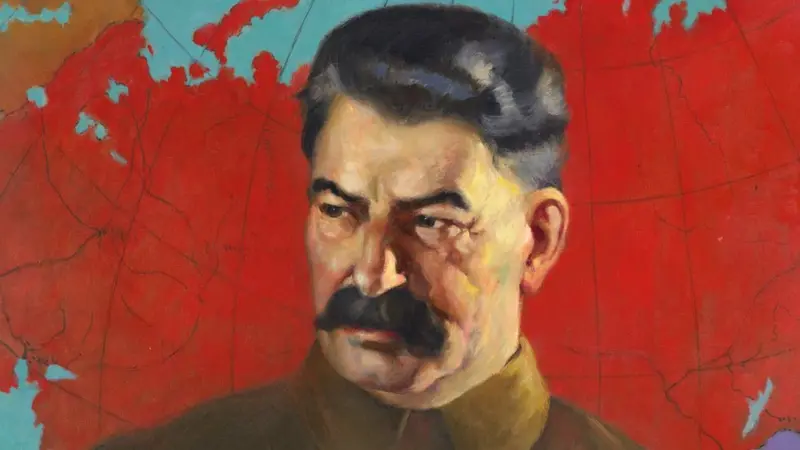

โจเซฟ สตาลิน (Joseph Stalin)

เป็นนักปฏิวัติและผู้นำทางการเมืองโซเวียตชาวจอร์เจียซึ่งปกครองสหภาพโซเวียต ตั้งแต่ ค.ศ.1924 จนกระทั่งถึงแก่อสัญกรรมใน ค.ศ.1953 เขาได้ขึ้นเถลิงอำนาจด้วยการขึ้นดำรงตำแหน่งทั้งเลขาธิการพรรคคอมมิวนิสต์แห่งสหภาพโซเวียต (ค.ศ.1922-1952) และประธานสภารัฐมนตรีแห่งสหภาพโซเวียต (ค.ศ.1941-1953) แม้ว่าในช่วงแรกจะปกครองประเทศด้วยการเป็นส่วนหนึ่งของกลุ่มผู้นำส่วนรวม จนในที่สุดเขาก็รวบอำนาจได้อย่างเบ็ดเสร็จจนกลายเป็นเผด็จการแห่งสหภาพโซเวียต ใน ค.ศ.1930 ในอุดมการณ์ของลัทธิคอมมิวนิสต์ที่มุ่งมั่นถึงการตีความลัทธิมากซ์ของฝ่ายนิยมลัทธิเลนิน สตาลินได้เรียกแนวคิดนี้อย่างเป็นทางการว่า ลัทธิมากซ์-เลนิน ในขณะที่นโยบายของเขาเองที่ได้เรียกกันว่า ลัทธิสตาลิน